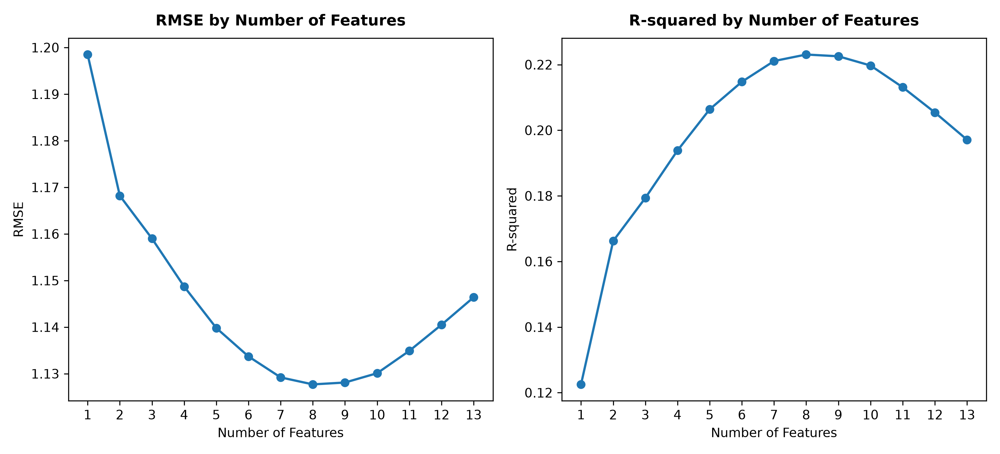
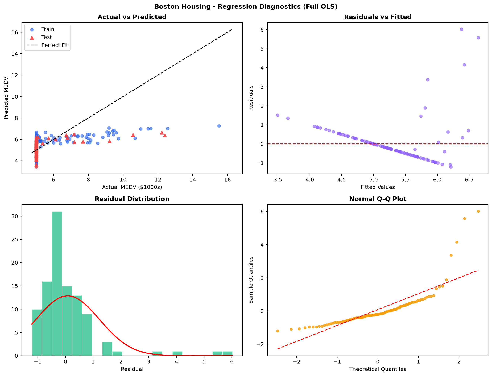
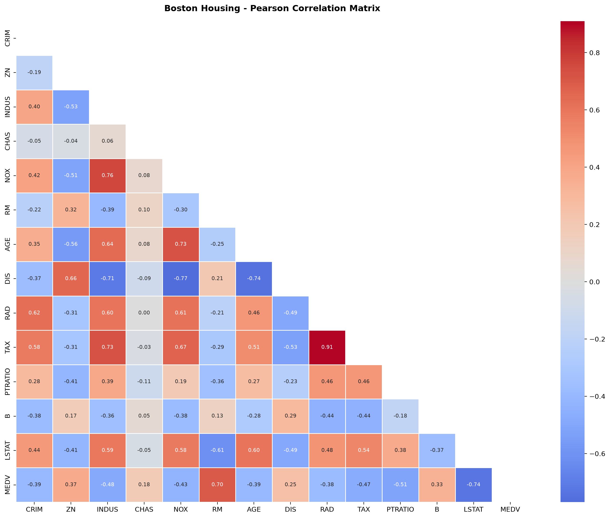
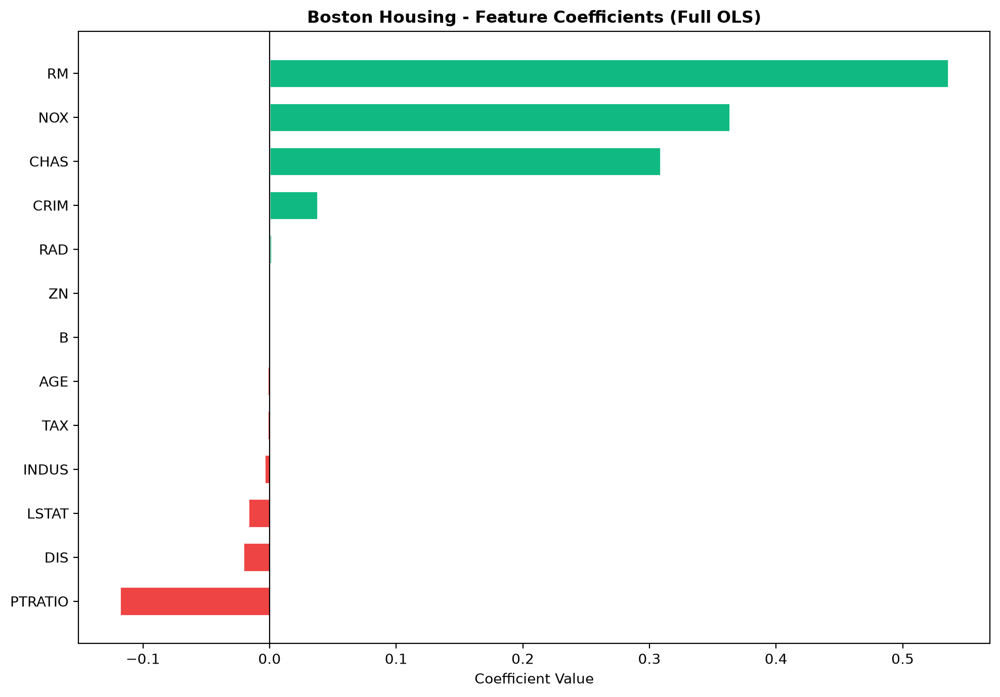
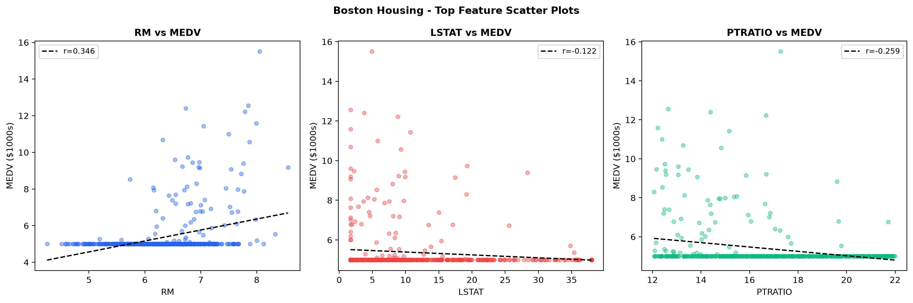

Sequential Forward Selection：RMSE 與 R²最佳 k = 8

結合 CRISP-DM、Scikit-Learn 線性迴歸與前向特徵選取，將住宅條件轉換為清楚、可解釋的房價預測。
調整關鍵住宅條件，即時檢視模型預測、信賴區間與各特徵的線性貢獻。
點擊任何一筆資料，即可帶入模擬器重新試算。
| # | RM | CRIM | PTRATIO | TAX | NOX | LSTAT | CHAS | 實際 MEDV | ML 預測 | 殘差 |
|---|




